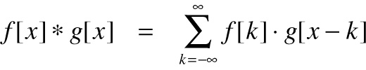
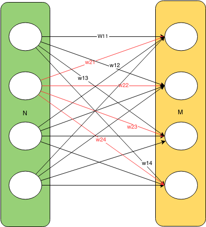

NeuroPhi - Improving CNN Runtime on Intel Xeon Phi via FFT
Summary
Neurophi is a C++ framework with a MATLAB interface for doing fast, parallel convolutional neural network (CNN) training, particularly for large, high resolution images. Course project for 15-418 Parallel Computer Architecture and Programming at Carnegie Mellon University.
Motivation
There is increasing interest in classifying large, high-resolution images. Social networking sites like Facebook must do fast, automated facial recognition of user-uploaded photos. As a result, the ImageNet database of large images is replacing many legacy databases of 32x32 images to become the new standard for training neural networks to do image classification. In some applications such as image denoising, it also beneficial to convolve an image with a larger filters. However, many existing parallel CNN training frameworks, including Caffe and CudaConvnet, continue to optimize their convolutions for small images and kernels. NeuroPhi differentiates itself from existing parallel CNN training frameworks by computing convolutions in the Fourier domain instead of the time domain, which is optimal for large images and kernels.
Unlike the existing parallel CNN training frameworks that rely on CUDA and GPU computation, NeuroPhi’s target hardware is a CPU and Intel Xeon Phi Coprocessor. Neural network operations are computationally dense and highly parallelizable; as GPU core counts continue to increase, GPU training is not compute limited, but bandwith limited by the rate at which data can be offloaded to the GPU. The Xeon Phi coprocessor, Intel’s competitor to NVIDIA’s Tesla, supports code written for x86 architecture, and therefore has the potential to run backpropogation with fewer bandwidth limited offloads. By writing NeuroPhi for CPU and Xeon Phis, we also give users the convenience of extending the framework with standard C++ parallelization tools including OpenMP, Cilk, and ISPC.
Background
Neural networks are biologically-inspired supervised machine learning algorithms. Given a class of simple functions F and a set of observations O, a neural network will learn a hierarchy of linear functions followed by non-linear operations such that the network optimally performs feature extraction and classification. The ability to learn using a hierarchy of simple transfer functions has made neural networks key computational models for applications such as computer vision and speech recognition. However, large neural networks–which may have several hidden layers, thousands to millions of parameters– are very computationally expensive to train.
To train such networks we use the backpropogation algorithm. Backpropagation iteratively updates the weights of the network to minimize a loss function–a function representing how “off” we are from the desired output–by determining the contribution of each input weight and bias in the network to the loss function. The basic steps of backpropagation are as follows
- Initialize the input layer of the network to include an input for bias
- Propagate the activity forward for each layer of the network
- Calculate the error at the output layer
- Back-propagate the error through the other network layers
- Update the weights of the network
Convolutional neural networks are a subclass of neural networks that reduce the number of parameters required to do efficient feature extraction by applying the same filter(s) to several contiguous regions of an image. The feature extraction phase of the learning process may have many layers, including, most notably:
Convolutional layers
The parameters of convolutional layers are a set of learnable filters. Each one of these filters is then convolved with the input volume to produce its output. The process of convolution can be expressed by the following formula in 1D

In 2D this can be visualized as the following:

The following is a naive implementation of 2D convolution:
for w in 1:W
for h in 1:H
for x in 1:K
for y in 1:K
output(w, h) += input(w+x, h+y) * filter(x, y)
end
end
end
end
Most CNN libraries, including Caffe, use linear algebra tricks to manipulate the matrices involved in the convolution and take advantage of fast matrix multiplication with cblas. In particular one can “stack” the filters on top of one another and do 1 large convolution instead of several smaller ones.
Pooling layers
In order to reduce output variance and introduce translation invariance we can use pooling after convolutional layers. Pooling layers simply take the max or average value of a feature over a region of the image. This ensures that the network will have the same output for small translations of the input image.
The feature extraction layers are followed classification architecture, which generally consists of…
Fully connected layers
These layers consist of the classic neural network computational units with all-to-all connections between layers:

Approach
We began our work from the existing ConvNet framework, which supports serial CNN training on a CPU, very minimal parallelization for CNN training on a CPU, and GPU CNN training using CudaConvnet. We aimed to dramatically increase the parallelization of the CPU version of ConvNet, make it suitable for doing CNN training/classification on large images, and offload some of its computations to the Xeon Phi coprocessor.
Neural network training consists of forward propagation, backwards propagation, and weight updates of the various layeys of the network. We timed ConvNet’s serial CPU implementation of CNN training in the computationally intensive stages of forward propagation, backwards propagation, and weight updates for the convolutional, fully-connected, and, as expected, most of the time during network training was spent on convolutional layer computations. Back propgation through the convolutional layer was particularly slow, and this training stage is dominated by image convolutions. We therefore decided to focus our efforts on optimizing the parallelization of the actual convolution operation.
NeuroPhi’s convolutional layer uses Fast Fourier Transforms, which transform the convolution operator into a simple element-wise product of the FFT of the image and FFT of the kernel. Though there is overhead in computing an FFT and inverse FFT, the convolution in the Fourier domain is simple a element-wise product which is highly parallelizable.
One <a href=http://arxiv.org/pdf/1410.0759.pdfcommon>complaint of the FFT convolution implementation</a> is that it doubles the memory useage of the convolution operation, since the convolution kernel must be padded to match the size of the input. However, a trick can be employed for convolutions applied to images. A convolution input typically has a real and imaginary component. Since images have only real components, the expanded kernel can be made to occupy the “complex” portion of the image. This halves the memory useage of the computation and approximately halves the latency of the operation, since only one FFT is now required. This trick comes from the fact that the FFT of a real signal is symetric in the Fourier domain so we only need to do half the computation we would otherwise have to do.
Another important optimization for a parallel CNN training framework is concurrent training on multiple images, known as parallel batch processing. New network weights are calculated concurrently over multiple images, and the weights from several images are then reduced so that a single weight change is applied to the network for a batch of images. This can be acheived by multithreading image computations through the network and heeding the critical region in which weight computations across images (threads) are summed.

Results
All results below were obtained by running code on a single node of latedays, on two, six-core Xeon e5-2620 v3 processors.
We compared three implementations of image convolution: 1) the naive, time domain implementation pictured in the background section 2) A recursive FFT implementation of convolution, new to NeuroPhi, and 3) An unrolled FFT implementation of convolution, new to NeuroPhi. Convolution runtimes on 512x512 pixel images (roughly the average size of images in the ImagNet database) for serial versions of the three algorithms as a function of kernel size are shown below. While runtime quickly blows up for large kernel sizes in the time domain, it remains fairly constant over kernel sizes in the two Fourier domain algorithms.

We then implemented parallelized versions of all three algorithms. The time domain algorithm was parallelized with OpenMP multi-threading and ISPC vector intrinsics. The recursive FFT algorithm was parellized with cilk_spawn’s fork-and-join parallelism. The unrolled FFT algorithm was already so fast after parallelizing it with ISPC vector intrinsics that spawning new threads was generally too much overhead and just incurred latency. Cilk had too much overhead and only a single for loop was efficiently parallelized with OpenMP. It is also worth noting that while OpenMP provides #pragma vector and #pragma simd directives for vector operations, we got signficantly better speedup by writing vector intrinsics with ISPC. Runtimes of all three parallel implementations on 512x512 pixel images as a function of kernel size are shown below. Once again, while runtime quickly blows up for large kernel sizes in the parallel time domain algorithm, it remains fairly constant over kernel sizes in the two parallel Fourier domain algorithms.

Serial implementation to parallel implementation speed-ups for the three algorithms are shown below.

Our fastest convolution performance was acheived using the unrolled, vectorized FFT with the complex component convolution trick previously described, manual control of the thread count to match the number of execution contexts on a latedays machine, and setting the THREAD_AFFINITY compiler flag to SCATTER. This was unusual behavior as one would think having the data in each thread being sent to different cores would hinder performance. With more time, we would like to investigate why this aided performance.
The figure below compares performance of our fastest parallel unrolled FFT to well known parallel CNN training frameworks <a href=http://arxiv.org/pdf/1412.7580v1.pdf>Facebook FFT</a>, CudaConvNet2, and Caffe. Benchmark times were take from the link. Timings are for a single pass through 5 convolution layers for a 128x128 image and 11x11 kernel. Note that the NeuroPhi was actually tested on 9x9 and 15x15 kernels and that our 11x11 kernel time is an interpolation of our time between these two values. However, the estimated 11x11 kernel time is consistent with the rest of our data. GPU data from all the established frameworks was obtained on a single Titan Black NVIDIA GPU. Our implementation ran on single a latedays node CPU. This estimated comparison shows that our parallel FFT algorithm is 3x as fast as Caffe’s convolution and 2x as fast as cudaConvNet’s. Our implementation is approximately as fast Facebook’s recently released FFT implementation.

Though memory usage is always higher for FFT implementations of convolution than time domain implementations, the complex image component trick described in the “Approach” section did halve the memory useage of a standard FFT implementation. Shown below is the mean memory useage across the various kernel sizes reported in previous figures as a function of time. The time domain convolution essentially only requires memory equal to the size of the the image and the kernel, which is constant over time. A standard FFT implementation requires 2x memory at the start, as the kernel is padded to match the image size. We then have to round the image to the next power of 2 in order for us to avoid border effects, which doubles memory again to 4x the size of the image. Using the trick, we can store both the image and kernel in the same matrix. And finally, theoretically we could use a FFT implementation that does not require power of 2 inputs which would then not require us to round to the next power of 2. This would save additional memory. Data for this plot was obtained by averaging the memory used at 3 points in the program:very beggining, after resizing of images and rounding, and very end. The memory used was averaged over all kernel sizes for each implementation. We assume that memory usage for an implementation would be roughly consistent across kernel sizes and believe this to be a valid based on preliminary data analysis.

We focussed our initial parallel batch training efforts on backpropagation and were specifically interested in how batch training, independent of convolution optimizations or other vectorizations, would improve speedup. The figure below shows the time for 128 images to be processed through the convolutional layer in backprogation when those images are processed serially vs in parallel with OpenMP multi-threading. We were able to acheive an additional ~1.8x speedup on backpropagation through the convolutional layer as compared to the standard CPU implementation. To acheive this speedup, it was important to manually control set the number of thread to 12 for the 12 latedays execution contexts and to statically schedule the threads to receive chunks of about 10 images each. All images in our dataset were the same size, so it made sense to essentially pre-assign every image to a thread to reduce thread scheduling overhead.

Challenges and Future Directions
One of the primary challenges of our project was integrating ConvNet’s MATLAB frontend with C++ backend code and especially with the Xeon Phi. Though we were able to offload portions of standalone C++ code to the Phi, such as our fft scripts, there were many linking and library issues when trying to integrate the entire MATLAB embedded, ConvNet code base. We believe that parallel batch processing, in particular, could benefit from being run on the many-cored Phi, and would like to extend NeuroPhi to this framework in the future. We would also like to extend our fast FFT convolution implementation to support images that are not powers of two to reduce its memory footprint.
Please find references for this work linked throughout this page, as appropriate.